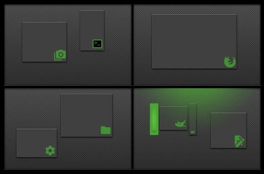
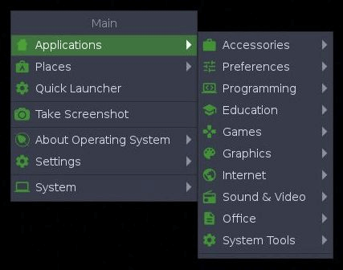
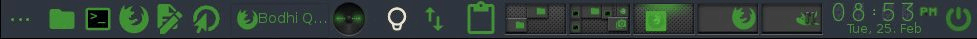

Organize as suas Tarefas com as Áreas de trabalho Virtuais As áreas de trabalho virtuais permitem agrupar aplicações de um determinado tipo numa área de trabalho e as de um tipo diferente em outro. Inicialmente são quatro áreas de trabalho virtuais, mas pode-se alterar este número.
O paginador no painel mostra pequenos gráficos das áreas de trabalho disponíveis com as aplicações em execução em cada uma.
Há várias maneiras de mudar entre elas:
- Com o Paginador, basta clicar no gráfico da área de trabalho em que deseja estar.
- Utilizar a tecla de atalho: Ctrl+Alt + <Seta> na direção que deseja mover-se.
- Escolha a sua área de trabalho desejada via Menu principal>Área de trabalho>Virtual.

Toda a área de trabalho é o Menu
Um clique em qualquer espaço vazio da área de trabalho abrirá o Menu Principal, de onde poderá lançar aplicações, ajustar configurações, desligar o sistema, e assim por diante. Este é o padrão numa nova instalação do Bodhi. A maioria considera-o muito conveniente. Para os poucos que não o fazem, o "Mostrar Menu Principal", pode ser facilmente removido/configurado em: Menu Principal>Configurações>Painel de configurações>Entrada>Associações do mouse, juntamente com quaisquer outras associações dele.
Clicando com o botão direito do mouse num espaço vazio na área de trabalho, surgirá o Menu Favoritos. Uma vez que não existem aplicações favoritas numa nova instalação do Bodhi, o Menu Favoritos não será exibido com um clique do botão direito do mouse. Estará à sua espera em antecipação para adicionar aplicações! Para fazê-lo, vá em Menu Principal > Configurações > Painel de configurações > Aplicações > Aplicações favoritas

Muitos Gadgets mostram informações do sistema
Os Gadgets desempenham uma grande variedade de funções. Muitos mostram informações do sistema, tais como nível de bateria, hora, ou frequência da CPU. Outros permitem interagir com o sistema de alguma forma, tais como ajustar o volume ou a luminosidade da tela. A maioria permite várias instâncias em diferentes locais, por exemplo num painel bem como na área de trabalho.
Podem ser encontrados e adicionados à área de trabalho via: Menu principal>Configurações>Gadgets

Disponibilidade de Gadgets de controle de módulos
Um gadget só estará disponível se o seu módulo for carregado. Em termos simples, um gadget é uma instância de um módulo. Para carregar/descarregar módulos, vá a Menu principal > Configurações > Módulos. O Bodhi vem com uma vasta seleção de módulos instalados por padrão, e mais podem ser instalados a seu critério através da AppCenter do Bodhi e do Gerenciador de Pacotes Synaptic.
Painéis - A Barra de Tarefas/Bandeja do Sistema/lar do Dock O Moksha fornece painéis para alojar os seus gadgets e lançadores - uma alternativa conveniente para tê-los na área de trabalho (a maioria dos gadgets pode ser adicionada aos painéis). Os painéis podem ser adicionados em qualquer local numa margem da sua área de trabalho, e pode haver mais de um painel numa área de trabalho, assim como diferentes painéis em diferentes áreas de trabalho virtuais. A gestão do número de painéis bem como a sua localização, tamanho e outros atributos é feita em
Menu principal > Configurações > Painéis. Para gerir o conteúdo de um painel (ou seja, os seus gadgets), clique com o botão direito no painel e escolha
Painel > Conteúdo.


Enrolar - Alternativa à Minimização Quer tirar uma janela do seu caminho mas não quer minimizá-la para a barra de tarefas? Então enrole-a! Basta dar um duplo clique na barra de título de qualquer janela para "enrolar para cima", e dar um duplo clique na barra de título para "desenrolar para baixo" novamente.
A imagem aqui mostra duas instâncias do Terminology, uma que está enrolada e outra que não está. O Terminology é atualmente o terminal predefinido no Bodhi.
Alguns atalhos práticos: Atalhos são referidos como Associações no Moksha e podem ser acionados, por exemplo, clicando com o mouse numa extremidade da tela, usando uma combinação de teclas, ou usando uma tecla + clique do mouse. São categorizados da seguinte forma:
- Associações da margem (margens da tela)
- Associações de tecla (teclado)
- Associações do mouse (mouse+tecla)
- Associações de ACPI (eventos)
Você pode configurar suas próprias associações, mas muitas já foram configuradas por padrão. Estas incluem:
Alt+<clique-esquerdo> (mouse)
permite clicar em qualquer lugar na janela para arrastá-la e reposicioná-la
<clique-esquerdo> (mouse)
numa parte aberta da área de trabalho, abre o Menu Principal
<clique-direito> (mouse)
numa parte aberta da área de trabalho, abre o menu favoritos
Ctrl+Alt+X (tecla)
fecha uma janela
Ctrl+Alt+<seta> (tecla)
muda para a área de trabalho virtual na direção selecionada
Ctrl+Alt+M (tecla)
apresenta o Menu Principal
Shift+F10 (tecla)
maximiza uma janela na vertical
Alt+Shift+F10 (tecla)
maximiza uma janela na horizontal
Alt+Tab (tecla)
troca entre janelas na mesma área de trabalho
Todas as ligações podem ser localizadas e configuradas em:
Menu principal>Configurações>Entrada>Ligações de chave
Para mais informações e uma lista completa de todas as associações predefinidas, veja a nossa Wiki.


{kind=link}
{kind=link}
{kind=link}